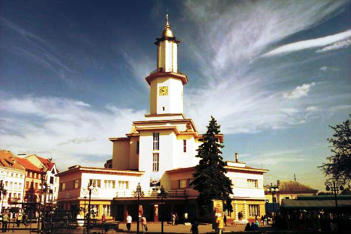

Загальна інформація про місто Івано-Франківськ
Івано-Франківськ – одне з наймолодших європейських міст, економічний та культурний центр на заході України. Це особливий куточок світу, де з Божого благословення чиста, гірська, недоторкана природа поєдналася з архітектурною красою, гостинністю, доброзичливістю його мешканців. Він не схожий на жодне інше місто в світі з вельми об’єктивних історичних та географічних причин.
Івано-Франківськ є важливим промисловим, туристичним та транспортним центром Західної України, має розвинуту банківську мережу та три Національні університети.
Основні галузі економіки міста: галузі переробної промисловості (харчова, легка, машинобудівна, деревообробна та ін.), будівництво, туризм, торгівля. Відстань до основних туристичних центрів регіону: Галича – 25 км, Манявського Скиту – 40 км, Яремче – 70 км, Ворохти – 90 км, Косова -100 км, курорту “Буковель”- 100 км, Верховини – 120 км.
Транспорт. Місто має залізничне та повітряне сполучення з Києвом, автобусне сполучення з багатьма містами України та Європи.
Населення м.Івано-Франківська складає 241,1 тис. чол. (станом на 01.01.2011) Рівень зареєстрованого безробіття – 1,34 % (станом на 01.01.2011). Середньомісячний рівень оплати праці по місту у 2010р. становив 1981 грн. Загальний обсяг прямих іноземних інвестицій, залучених в економіку міста, на 01.01.2011р. -становив 113,7млн.дол.США
Івано-Франківськ є одним з найбільш розвинутих міст України з вигідним географічним розташуванням біля кордонів Європейського Союзу та сприятливим інвестиційним середовищем.
Місто Івано-Франківськ – адміністративний центр Івано-Франківської області – розташоване за 500 км на південний захід від столиці України – міста Києва та за 160-300 км від кордонів Європейського Союзу.
Прямим залізничним сполученням Івано-Франківськ (через Львів) з’єднаний з Берліном, Будапештом, Братиславою, Варшавою, Вроцлавом, Краковом, Мінськом, Москвою, Прагою, Санкт-Петербургом.
Візитна карта міста
Ратуша
Як і у багатьох містах Західної України в Івано-Франківську збереглась споруда міської ратуші. Вона розташована в центрі міста на площі Ринок. Однак відрізняє Франківську ратушу від інших стиль в якому вона зведена. Міська ратуша в Івано-Франківську спорудження в стилі модерн, який не є притаманний для таких будівель.
Історія ратуші в Івано-Франківська дуже насичена. Сучасна ратуша, яка дійшла до наших днів, є уже четвертою будівлею зведеною на цьому місці. Першу будівлю міського магістрату заклав засновник міста Потоцький Андрій. Це була будівля з каменю та дерева, яка проіснувала з 1672 року по 1677 рік, коли була розібрана після турецької облоги міста. Наступну кам’яну ратушу було споруджено в 1695 році за кресленнями архітектора Карла Бена. Його творіння простояло до 1868 року, коли небачена пожежа спустошила місто, а від ратуші залишився тільки металевий скелет. Третя ратуша зведена в 1871 році простояла до Першої світової війни, а саме до 1915 року, коли дуже постраждала в наслідок обстрілу здійсненого австрійською артилерією. Реконструкція ратуші розпочалась аж в 1935 році, а остаточно була завершена на передодні Другої світової війни і в такому виді дійшла до наших часів. В плані споруда являє собою хрест, на перетині якого підіймається вежа висотою понад 49 метрів.
Сьогодні будівля ратуші не використовується, як адміністративна будівля. Тут знаходиться краєзнавчий музей.
Путівник
«Івано-Франківськ для туристів» - це автономна програма, яка знайомить туристів з містом у пішохідних екскурсіях. Задані маршрути ведуть до цікавих місць і мають низку зупинок із змістовними описами й фотографіями.
Можливості програми:
- віртуальні гіди для пішохідних екскурсій;
- текстові описи, фотографії та звукозаписи про визначні пам'ятки міста;
- автономна мапа;
- важливі номери телефонів;
- розташування готелів, місць проведення культурних заходів, лікарень, банків тощо.
Івано-Франківськ для туристів Android